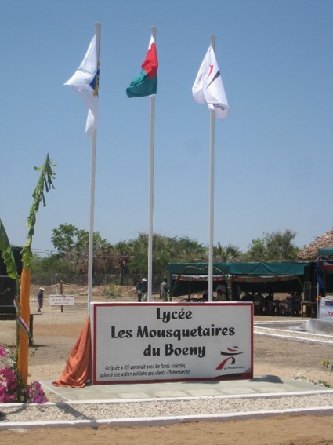
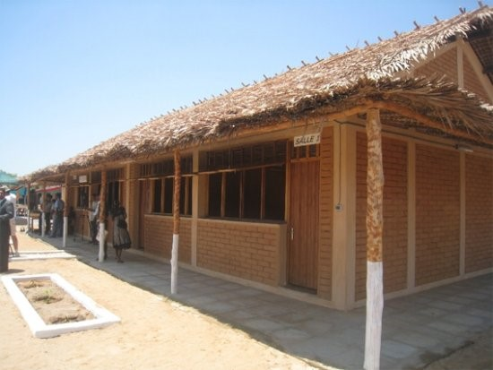
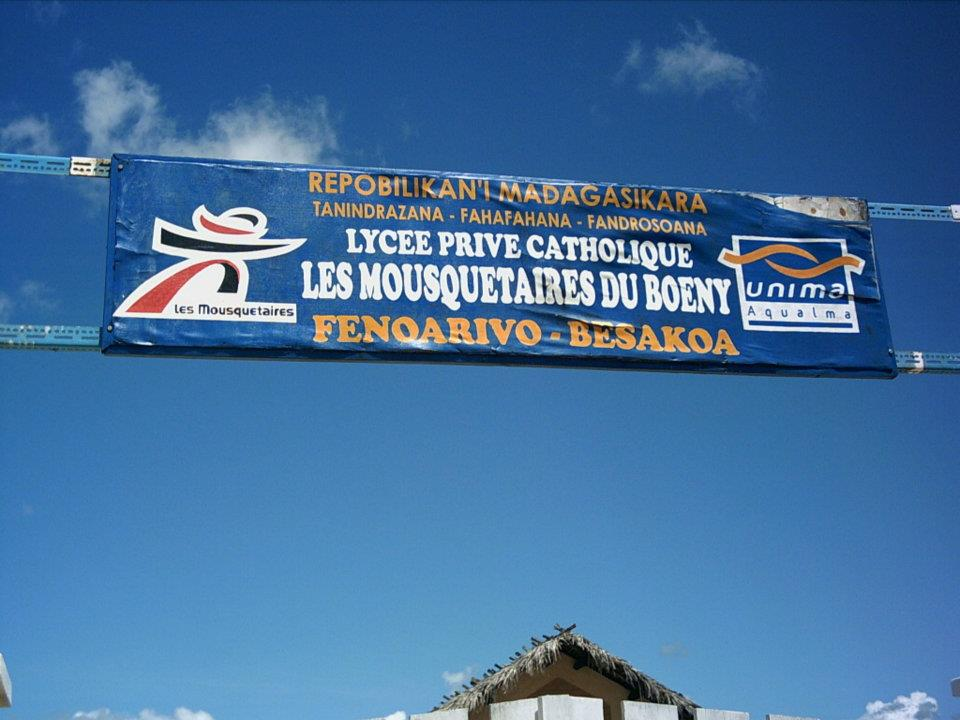
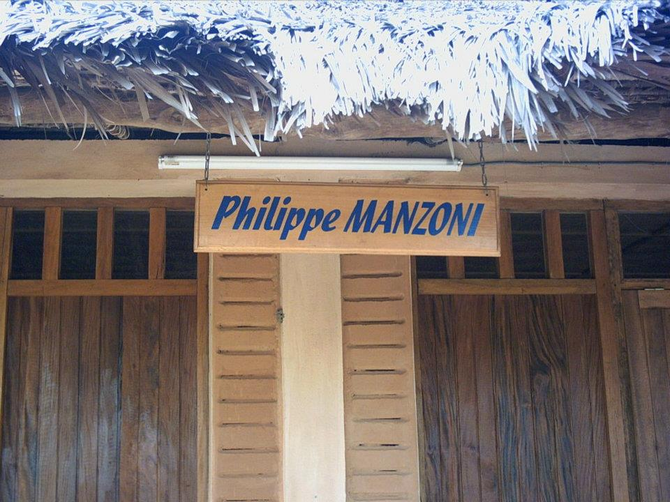
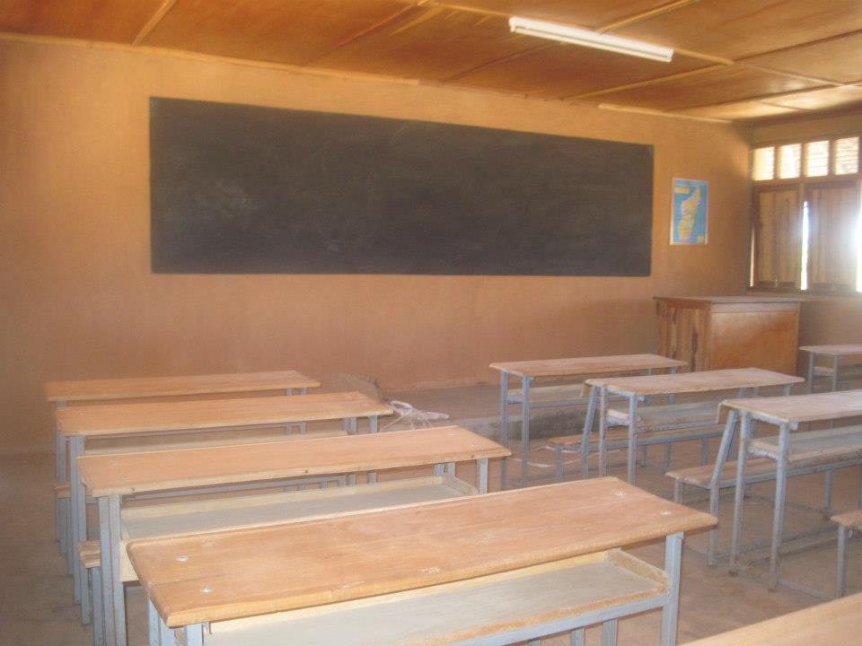
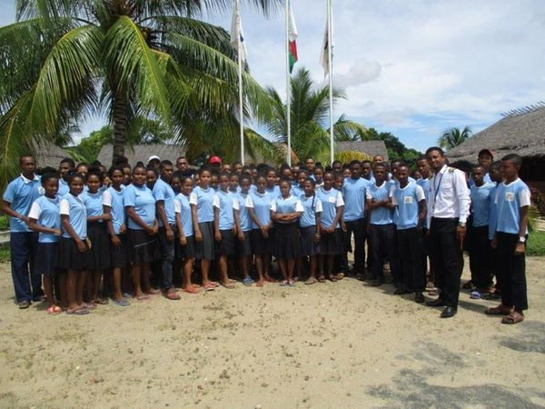

Là stèle, avec trois drapeau, dont le partenaire est à droit du drapeau nationnal Malagasy, et le groupe "UNIMA" est celle du gauche.

Une batîment a deux salles de classe, au toit: "SATRANA" et brique pour le mur.

Plaque au devant du grande porte, avec le slogant de la Republique Malagasy, la region (mahajanga II), le logo des organisateurs et le nom du lycée.

"Philippe Manzoni", chaque batîment s'affiche le nom d'equipe de l'organisateur lors du construction.

dans la salle de classe: un tableau noir, une table d'ensignant et plus de 15 table-bancs pour les etudiants.

photo, (avec le pilote aerien), après la representation de metier.